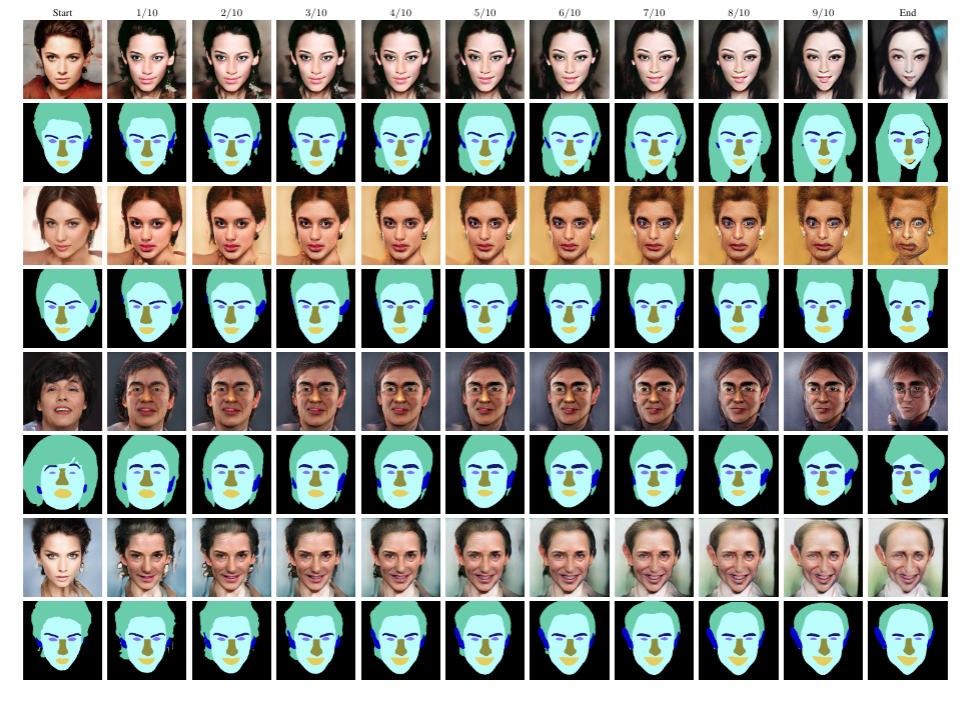

Training deep networks with limited labeled data while achieving a strong generalization ability is key
in the quest to reduce human annotation efforts. This is the goal of semisupervised learning, which exploits
more widely available unlabeled data to complement small labeled data sets. In this paper, we propose a novel
framework for discriminative pixel-level tasks using a generative model of both images and labels. Concretely,
we learn a generative adversarial network that captures the joint image-label distribution and is trained
efficiently using a large set of unlabeled images supplemented with only few labeled ones. We build our
architecture on top of StyleGAN2, augmented with a label synthesis branch. Image labeling at test time is
achieved by first embedding the target image into the joint latent space via an encoder network and test-time optimization,
and then generating the label from the inferred embedding. We evaluate our approach in two important domains:
medical image segmentation and part-based face segmentation. We demonstrate strong in-domain performance compared to
several baselines, and are the first to showcase extreme out-of-domain generalization, such as transferring from CT to MRI
in medical imaging, and photographs of real faces to paintings, sculptures, and even cartoons and animal faces.
(Model trained on real human-face dataset CelebA only)
Interpolation Between Celeba
Interpolation Between Celeba and Out-of-domain Metface
Interpolation Between Celeba and Out-of-domain Cariface
Interpolation Between Celeba and Extreme Out-of-domain data
Chest X-ray Segmentation
Interpolation Between Random Chest X-ray Latent Codes
Test-time Optimization Steps Visualization on Out-of-domain Data
CT-MRI Liver Segmentation
(Model trained on CT dataset only)
Interpolation Between Random CT Latent Codes
Interpolation Between Liver CT and CHAOS Liver T1-MRI
Face Parts Segmentation Optimization Steps
Image reconstructions and segmentation label predictions at different steps during the optimization process.
Step 0 corresponds to using the latent code predicted by the encoder without any further optimization.
The model was trained on CelebA-Mask data. Hence, the first example corresponds to in-domain data,
while the other two examples, from the MetFace dataset, are out-of-domain cases.
Latent Space Interpolations

Linear interpolations between two random latent codes from celeba images to cother eleba, metface and cartoon images.
We show both the interpolated images and their semantic segmentation labels.
The results show that the generative model learnt a smooth latent space with meaningful images along the interpolation path.
Furthermore, we observe consistency between images and predicted labels along the interpolation path.
Quantitative Results
Chest X-ray Lung Segmentation Numbers are DICE scores.
JSRT is the in-domain dataset,
on which we both train and evaluate. We also evaluate on additional out-of-domain datasets
(NLM,
NIH,
SZ).
Ours as well as the other semi-supervised methods use additional 108k unlabeled data samples.
Skin Lesion Segmentation Numbers are JC index. ISIC
is the in-domain dataset, on which we both train and evaluate. We also evaluate on additional out-of-domain datasets
(PH2,
IS,
Quest).
Ours as well as the other semi-supervised methods use additional 33k unlabeled data samples.
CT-MRI Transfer Liver Segmentation Numbers are DICE per patient. CT
is the in-domain data set on which we both train and evaluate. We also evaluate on additional unseen
MRI T1-in and MRI T1-out from
CHAOS dataset.
Ours as well as the semi-supervised methods use additional 70 CT volumes from the
LITS2017 testing set as unlabeled data samples for training.
Face Part Segmentation Numbers are mIoU. We train on CelebA and evaluate on CelebA (denoted as “In”)
as well as the MetFaces dataset. Train labels denotes the number of annotated examples used during training.
Our model as well as the semi-supervised baselines additionally use 28k unlabeled CelebA data samples.

{kind=link}
{kind=link}
{kind=link}
{kind=link}